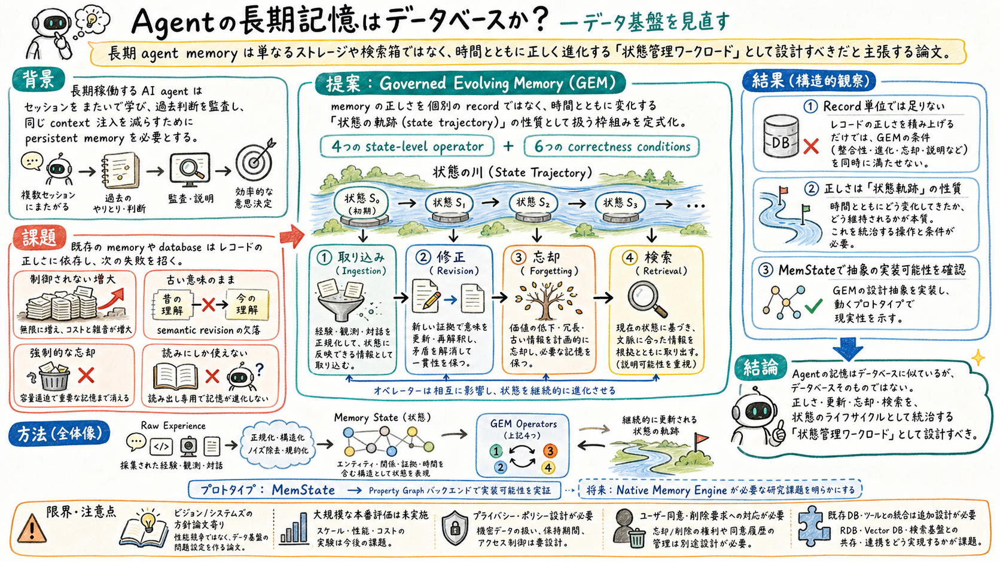

第一の貢献は、長期 agent memory を Governed Evolving Memory として定式化したこと。memory を governed な状態遷移の対象として見る。

どんな論文か
この論文の出発点は、長期稼働する AI agent には persistent memory が必要だという観察にある。agent はセッションをまたいで学び、同じ context を何度も注入せず、過去の判断を監査できる必要がある。
ただし、既存の agent memory は保存箱、vector store、knowledge graph、retrieval component として扱われがちである。database 側にも永続性や検索の技術はあるが、agent memory が必要とする semantic revision、governed forgetting、state trajectory の正しさをそのまま満たすわけではない。
論文は、agent memory を Governed Evolving Memory、略して GEM として定式化する。memory は個別 record の集合ではなく、時間と操作によって変化する state であり、正しさも現在の record だけでなく state trajectory 全体の性質として考える必要がある。
GEM では、ingestion、revision、forgetting、retrieval が state-level operator として整理される。新しい経験を入れる、古い意味を修正する、保持すべきでないものを忘れる、必要な状態を取り出す、という lifecycle 全体が memory system の対象になる。
この論文は新しい最高精度モデルを出すというより、長期 agent memory をデータ基盤の新しいワークロードとして切り出す position / systems paper として読むとよい。MemState prototype は、その抽象が実装可能であることを示しつつ、native memory engine が必要になる理由を見せる。
Is Agent Memory a Database? は、長期 agent memory のデータ基盤を問い直す論文である。タイトルは database との比較になっているが、結論は単純な yes / no ではない。
agent memory は database に似ている。永続化、検索、更新、監査が必要だからである。しかし、従来の database や retrieval system は、agent が経験を通じて意味を更新し、不要な記憶を忘れ、状況に応じて取り出すという lifecycle 全体を中心に設計されていない。
論文は、memory を storage ではなく evolving state として扱うべきだと主張する。重要なのは、ある record が正しいかだけではなく、どの経験が入り、何が修正され、何が忘れられ、どの状態が取り出されたかという軌跡である。
課題と貢献
ingestion、revision、forgetting、retrieval を、単なる CRUD ではなく memory lifecycle の操作として扱う。
第三の貢献は、memory correctness を record-level ではなく state-level / trajectory-level に置いたこと。古い記憶の意味更新や忘却の妥当性を、正しさの一部として扱う。
第四の貢献は、MemState prototype によって abstraction の feasibility を示したこと。property graph backend を使いながら、既存基盤だけでは足りない研究課題を具体化している。
手法のしくみ
1
入力は agent の経験、対話、観測、判断、外部情報などである。これらはそのまま保存されるだけではなく、memory state を変化させる候補として扱われる。
2
ingestion は、新しい経験を memory state へ入れる操作である。ここでは、何を入れるか、どの状態と結びつけるか、重複や衝突をどう扱うかが問題になる。
3
revision は、既存 memory の意味や関係を更新する操作である。長期 agent では、過去の情報が間違っていたり、状況が変わったりするため、追記だけでは足りない。
4
forgetting は、容量だけでなく governance の問題である。古くなった情報、不要な情報、保持してはいけない情報を、どう正しく消すかが memory system の一部になる。
5
retrieval は、単に似た record を返すだけではない。現在の task、agent state、過去の revision、忘却済み情報を踏まえて、使ってよい状態を取り出す操作として扱われる。
検証結果
論文は、従来の record-level system だけでは、GEM が求める state-level correctness を満たしにくいと整理する。これはベンチマークスコアよりも、問題設定の切り出しが中心である。
MemState prototype は、GEM の考え方が実装可能であることを示すための橋である。property graph backend を使うことで、経験、状態、関係、操作を表現し、native memory engine の必要性を具体化する。
重要な結果は、agent memory を database 技術の単純な適用問題として終わらせないことにある。長期 memory には、更新、忘却、検索、監査を一体で扱う設計空間があると示している。
限界と読みどころ
この論文は position / systems vision paper 寄りであり、大規模な本番 agent memory の性能評価を網羅しているわけではない。
privacy、ユーザー同意、削除要求、監査ログ、組織ごとの policy enforcement は、GEM の重要な応用先だが、実運用では別途詳細設計が必要になる。
MemState は prototype であり、既存 database、vector store、knowledge graph、workflow engine とどう統合するかは今後の課題として残る。
state trajectory の正しさをどう測るか、評価 benchmark をどう作るかも未解決である。実際の agent 行動やユーザー影響まで見るには追加の評価設計がいる。
読みながら見る図表や節
- 読むときは、memory を record の山ではなく、時間に沿って変化する川のような状態として見ると分かりやすい。
- 四つの operator は、取り込み、修正、忘却、検索という lifecycle の駅として読む。どれか一つだけを改善しても、長期 memory の統治には足りない。
- database との比較は、似ている点と足りない点を分けて読む。永続化や検索は似ているが、semantic revision と governed forgetting は agent memory 特有の圧が強い。
- MemState は完成形というより、既存データ基盤で GEM を表現してみる試作として読む。そこから native memory engine の必要性が見えてくる。
次に読むなら
- VikingMem と並べると、実装寄りの Memory Base と、より抽象的な GEM の関係が見える。VikingMem は一つの具体形、GEM はデータ基盤としての問題設定に近い。
- SAGE と並べると、write-side control の論点が深まる。何を memory に入れるか、重複や merge をどう扱うかは GEM の ingestion / revision に直結する。
- STALE と並べると、古い記憶が現在も有効か、どのタイミングで忘却や修正が必要かを考えやすい。
- おい丸運用に引くなら、memory / wiki / state を、単発メモの集まりではなく、状態遷移の履歴として扱う設計に使える。
読後Q&A
この論文の中心問いは？
長期 agent memory は database なのか、あるいは database とは違う新しいデータ管理ワークロードなのか、という問いである。
論文の答えは？
agent memory は database に似ているが、単なる database ではない。時間とともに進化する状態を統治する memory engine として設計する必要がある。
GEM とは何？
Governed Evolving Memory の略で、agent memory を取り込み、修正、忘却、検索によって変化する状態として扱う抽象である。
なぜ record-level correctness では足りない？
長期 memory では、個別 record が正しくても、古い情報が残り続けたり、修正されるべき意味が更新されなかったり、忘れるべき情報が残ったりするからである。
四つの operator は何？
ingestion、revision、forgetting、retrieval である。新しい経験を入れ、既存状態を修正し、不要または保持不可の情報を忘れ、必要な状態を取り出す。
database と何が似ている？
永続化、検索、更新、監査、制約管理が必要な点は database に似ている。
database と何が違う？
agent memory では、意味の変化、経験に基づく状態遷移、方針に従った忘却、検索時に使ってよい状態の統治が中心になる。
MemState は何？
GEM の抽象を試す prototype で、property graph backend を使って memory state と operator を表現する。
この論文は性能を競う論文？
主眼は性能競争ではなく、長期 agent memory をデータ基盤の問題として定義し直すことにある。
一番実務に効く読み方は？
memory を保存先の選定ではなく、追記、訂正、忘却、検索、監査の lifecycle として設計するためのチェックリストとして読むこと。
おい丸運用に持ち込むなら？
wiki や memory の各ページを単独 record として見るだけでなく、どの経験がどの状態を変えたか、いつ修正し、何を忘れるかまで設計する。
一言でいうと？
agent memory は検索箱ではなく、長期に変化する状態を統治するためのデータ基盤である。